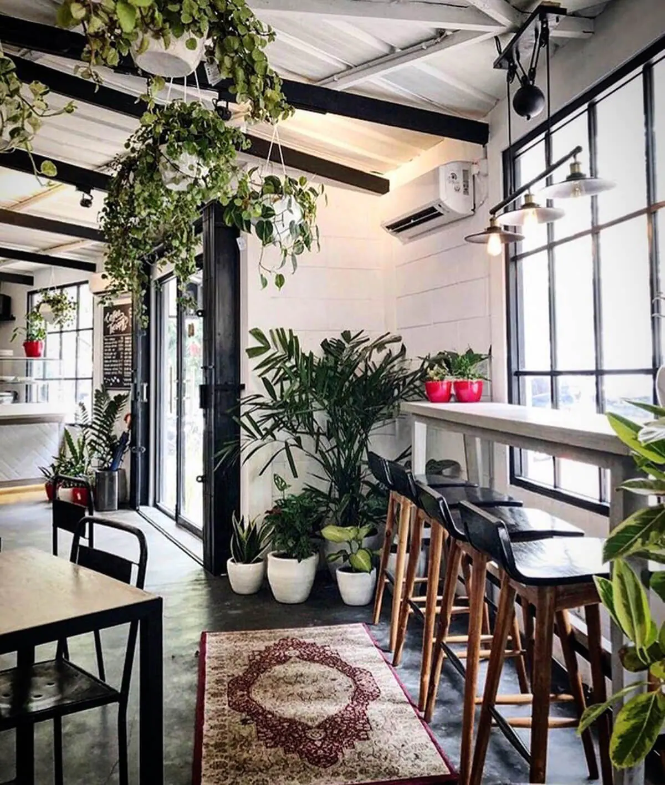

Vi ønsker alle hjertelig velkommen til Webtek Kafe i Haakon VIIs gate 17, i Trondheim.
Menyen vår inkluderer nybrygget kaffe, lunch-retter laget på ferske råvarer og desserter av et bredt utvalg sorter.
Vår visjon er å være en trygg møteplass med imøtekommende og engasjerte ansatte.
Vi legger til rette for at IT-interesserte, både studenter og eldre, skal ha en arena med et kreativt og skapende miljø.
Ved flere anledninger arrangerer vi både kurs og andre aktiviteter som er både interessante og artige å delta på.
Velkommen til oss!